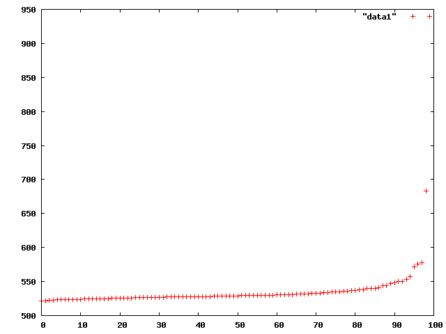
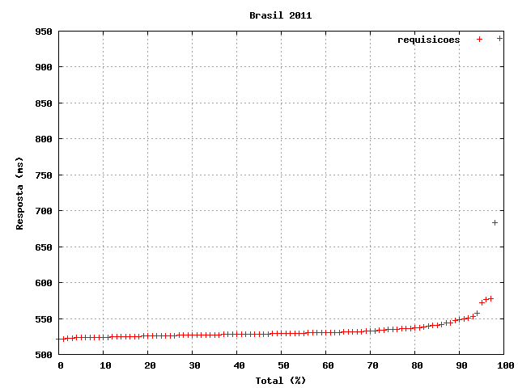
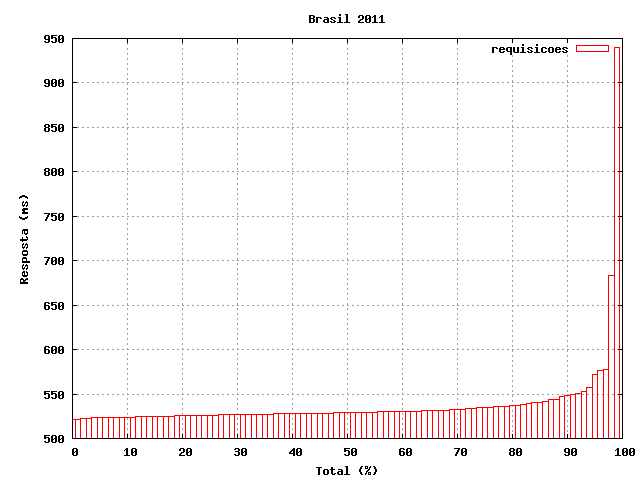
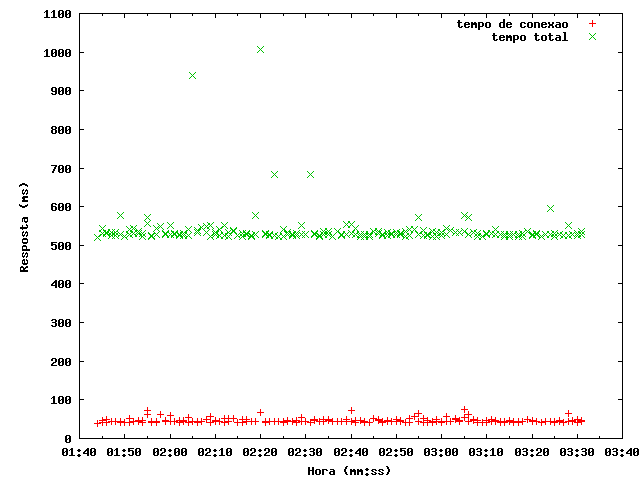

Gráficos de Desempenho com ApacheBench & GnuPlot
Que tal analisar dados representativos de acesso HTTP obtidos de uma URL, através de um gráfico de desempenho? Com os utilitários ApacheBench e GnuPlot isto é possível. Este artigo descreve como fazê-lo, utilizando um pouco de transformações na linha de comando.

ApacheBench
Para testar 200 requisições simples (sem concorrência) HTTP a URL da imagem acima, do Doodle do dia da Independência (2011), utiliza-se o ApacheBench (comando ab) da seguinte forma:
$ ab -e csv -g tsv -n 200 http://www.google.com.br/logos/2011/brazil_day-2011-hp.jpg
Notas:
- Para um teste de verdade de desempenho, é melhor usar muitas requisições, como 1000, 2000, 5000 ou até mesmo 10000;
- Deve-se também testar com múltipla concorrência, use
-c 10para testar com 10 requisições simultâneas, ou-c 100para fazer 100 requisições ao mesmo tempo.
Ao final dos testes é apresentado um resumo da execução, que por si só já é interessante para análise. Procure certificar-se que os testes não falharam, antes de tirar alguma conclusão.
Como vamos fazer gráficos dos dados coletados, teremos nos arquivos csv e tsv informações mais completas e complexas, do que o resumo apresentado na tela de execução do comando ab.
O arquivo csv contém as amostragens do tempo de resposta, por porcentagem das requisições:
$ head csv Percentage served,Time in ms 0,515.535 1,519.431 2,519.942 3,520.477 4,521.312 5,521.526 6,521.768 7,521.903 8,521.999
O arquivo tsv contém os tempos de resposta de cada requisição submetida:
$ head tsv starttime seconds ctime dtime ttime wait Wed Sep 07 18:09:44 2011 1315429784 37 479 516 176 Wed Sep 07 18:10:21 2011 1315429821 41 478 519 176 Wed Sep 07 18:10:55 2011 1315429855 41 478 519 176 Wed Sep 07 18:10:04 2011 1315429804 42 478 520 176 Wed Sep 07 18:10:44 2011 1315429844 41 479 520 177 Wed Sep 07 18:10:24 2011 1315429824 41 479 520 177 Wed Sep 07 18:11:17 2011 1315429877 42 479 520 176 Wed Sep 07 18:10:16 2011 1315429816 42 479 521 177 Wed Sep 07 18:09:44 2011 1315429784 41 480 521 178
Legenda para esses campos:
starttimeData e hora da requisição;secondsTimestamp da requisição (o mesmo questarttime);ctimeConnection Time, tempo até estabelecer a conexão (latência);dtimeProcessing Time, tempo de processamento da requisição;ttimeTotal Time, tempo total da requisição (ctime + dtime);waitWaiting Time, tempo de espera até receber o primeiro byte.
Todos estes tempos estão medidos em milisegundos (ms) ou seja, 1/1000 do segundo.
Filtragem
O GnuPlot recebe os dados numéricos em um formato padronizado, algo como apenas dados numéricos em colunas separadas por tabulações. Os dois arquivos gerados com o comando ab possuem alguns detalhes que precisam ser modificados, antes de serem úteis para o GnuPlot.
Ambos os arquivos geram um cabeçalho de descrição de campo, na primeira linha de cada arquivo, portanto é necessário removê-los.
Os dados do arquivo csv estão separados por vírgula, enquanto que dados do arquivo tsv estão separados por tabulações. No arquivo csv é preciso remover a primeira linha (cabeçalho) e separar por tabulações, ao invés de vírgulas:
$ tail -n +2 csv | tr ',' '\t' > data1
Já no arquivo tsv, deve-se remover o cabeçalho (a primeira linha) e para facilitar, também remover a primeira coluna, que contém a data expressa de maneira textual, pois é redundante com a segunda coluna, que é a mesma data e hora em formato de timestamp do Unix.
$ tail -n +2 tsv | cut -f 2-6 > data2
Resumindo, o arquivo data1 contém os dados do arquivo csv e o arquivo data2 contém os dados do arquivo tsv processados para o GnuPlot.
GnuPlot
Para traçar o gráfico dos dados disponíveis no arquivo data1, faz-se:
$ gnuplot gnuplot> plot "data1"

Para gerar o gráfico em um arquivo PNG, ao invés de desenhar na tela, faz-se:
$ gnuplot gnuplot> set terminal png gnuplot> set output "plot.png" gnuplot> plot "data1"
Pode-se acrescentar um título para o gráfico, rótulos para os eixos e uma malha (grid):
gnuplot> set title "Brasil 2011" gnuplot> set xlabel "Total (%)" gnuplot> set ylabel "Resposta (ms)" gnuplot> plot "data1" title "requisicoes"

Para utilizar o formato de barras:
gnuplot> plot "data1" using 2 title "requisicoes" with boxes
Nota: using 2 quer dizer: use os dados que estão contidos na coluna 2.

Vamos tratar agora dos dados do outro arquivo. A primeira coluna é um timestamp; uma data tem leitura especial pelo GnuPlot, uma máscara de leitura (%s para timestamp) se faz necessário, conforme abaixo:
$ gnuplot
gnuplot> set xlabel "Hora (mm:ss)"
gnuplot> set ylabel "Resposta (ms)"
gnuplot> set xdata time
gnuplot> set timefmt "%s"
gnuplot> plot "data2" using 1:2 title "tempo de conexao", \
"data2" using 1:4 title "tempo total"
Vários comandos plot podem ser utilizados, sempre separados por vírgula, e serão exibidos dentro de um mesmo gráfico.

Conclusão
É mais fácil avaliar o desempenho de um novo sistema ou de uma nova configuração, se dispomos de um gráfico para comparar as mudanças. Pode-se fazer gráficos interessantes com o GnuPlot, a partir dos dados do ApacheBench, conforme este artigo procurou mostrar.
Para traçar gráficos utilizando uma abordagem mais programática, recomendo olhar a biblioteca matplotlib, disponível para a linguagem Python. GnuPlot é mais interessante como ferramenta interativa.
Outras ferramentas gráficas para Mac OS X, que permitem explorar dados numéricos são Grapher.app, pré-instalado no Mac OS X e OmniGraphSketcher, software comercial.